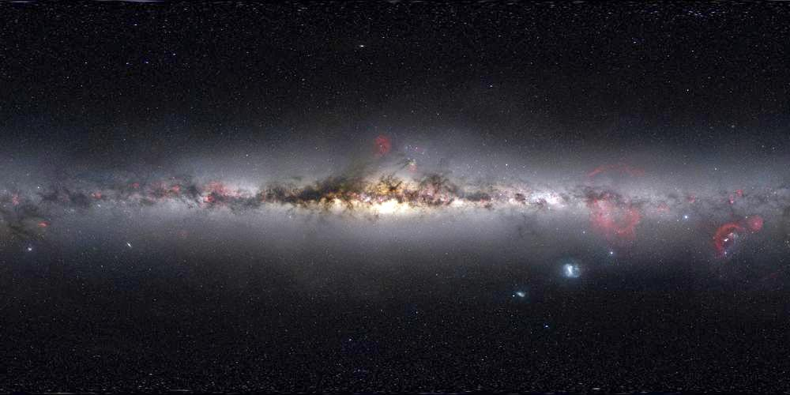

<html>
  <script src="https://aframe.io/releases/0.3.2/aframe.min.js"></script>
  <a-scene>  
    <a-assets>
        
        
      </a-assets>

      <a-sky src="#lake"></a-sky>
      <a-collada-model src="#sculpture" position="0 0 -6"></a-collada-model>
      <a-image src="2017 copy.png" width="10" height="6" position="-2 -1 -7"
               scale="0.2 0.2 0.2"></a-image>
      <a-image src="#pdx" width="10" height="6" position="-2 1.2 -7"
               scale="0.2 0.2 0.2">
          <a-animation attribute="scale" from="0 0 0" to="1 0.05 1" dur="500"
                       delay="500"></a-animation>
          <a-animation attribute="scale" from="1 0.05 1" to="1 1 1" dur="250" delay="1000"
                       fill="both"></a-animation>
               </a-image>
      <a-image src="style.png" width="90" height="30" position="-1.55 1.2 -7"
               scale="0.2 0.2 0.2"></a-image>
      <a-image src="moz.png" width="10" height="10" position="-8 5 -7"
               scale="0.2 0.2 0.2"></a-image>
      <a-image src="mozin.png" width="10" height="6" position="5 5 -7"
               scale="0.2 0.2 0.2"></a-image>
      <a-image src="tag.png" width="25" height="10" position="-2 5 -7"
               scale="0.2 0.2 0.2"></a-image>
      <a-image src="tweet.png" width=".5" height="0.25" position="0.5 -1.25 -6"
               scale="5 5 5"></a-image>
      <a-image src="twitter.png" width="0.1" height="0.1" position="-0.9 -1.25 -6"
               scale="5 5 5"></a-image>
      <a-image src="fb.png" width="0.1" height="0.1" position="-2.5 -2 -6"
               scale="5 5 5"></a-image>
      <a-image src="fbi.png" width=".5" height="0.25" position="-1 -2 -6"
               scale="5 5 5"></a-image>
      <a-image src="tel.png" width=".1" height="0.1" position="-4.2 -1.25 -6"
               scale="5 5 5"></a-image>
      <a-image src="telid.png" width=".5" height="0.25" position="-2.8 -1.25 -6"
               scale="5 5 5"></a-image>
  </a-scene>
</html>